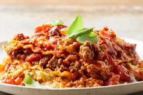
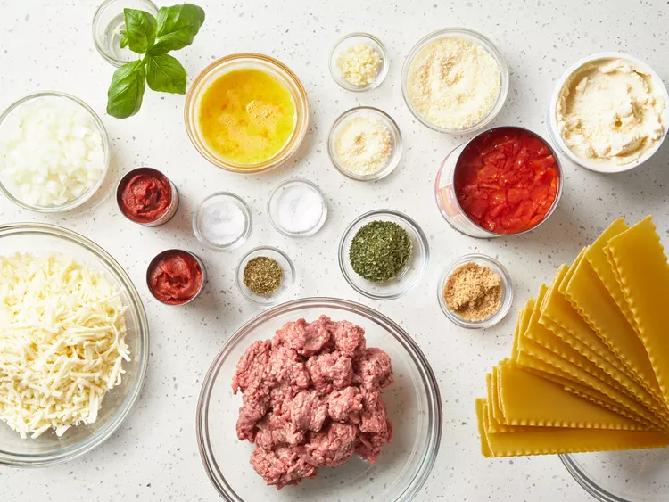

AMERICAN LASAGNA RECIPE
Making this lasagna recipe a day ahead and refrigerating overnight allows
the
spices to meld and gives it exceptional flavor.
Recipt by ETHELMERTZ | updated on July 3rd 2023

Ingredients
- 1/2 pounds lean ground beef
- 1 onion chopped
- 2 cloves garlic, minced
- 1 (29 ounce) can diced tomatoes
- 2 (6 ounce) cans tomato paste
- 2 tablespoon chopped frsh basil
- 212 teaspoons salt, divided
- 1 teaspoon dried oregano
- 12 dry lasagna noodles
- 1 pint part skim ricotta cheese
- 12 cup grated Parmesan cheese
- 2 large eggs, beaten
- 2 tablespoons dried parsley
- 1 pound mozzarella cheese, shredded
- 2 tablespoons grated Parmesan cheese
Directions
Step 1
- Gather all ingredients

Step 2
-
Cook and stir ground beef, onion, and garlic in a large skillet over
medium heat
for 5 minutes drain fat
:max_bytes(150000):strip_icc():format(webp)/JF_11729_AmericanLasagna_Shot2_14439-06deeea9390d4fa29fe40b2326640b32.jpg)
Step 3
-
Mix in diced tomatoes tomato paste, brown sugar, basil, 1 1/2 teaspoons
salt,
and oregano. Simmer meat sauce, stirring occasionally, for 30 to 45
minutes.
:max_bytes(150000):strip_icc():format(webp)/JF_11729_AmericanLasagna_Shot4_14479-4d9887b7646d4cf4a56d0793827c21a4.jpg)
Step 4
- Preheat the oven to 375 degrees F (190 degrees C).
Step 5
- Meanwhile, bring a large pot oflightly salted water to a boil. Coom lasagna
noodles in boiling water, stirring occassionally, until tender yet firm to the bite,
about 8 minutes; drain. Lay noodles flat on towels; blot dry.
:max_bytes(150000):strip_icc():format(webp)/JF_11729_AmericanLasagna_Shot6_14464-7338413198df429682028ca83eb248f4.jpg)
Step 6
- Mix together ricotta, 1/2 cup Parmesan cheese, eggs, parsley, and remaining 1
teaspoon salt in a medium bowl.
:max_bytes(150000):strip_icc():format(webp)/JF_11729_AmericanLasagna_Shot7_14474-23c914e2c44b423e8404989f21e51587.jpg)
Step 7
- Layer 1/3 of the noodles in the bottom of a 9x13-inch baking dish. Cover with 1//2
of the ricotta mixture.
:max_bytes(150000):strip_icc():format(webp)/JF_11729_AmericanLasagna_Shot9_14489-8301b309077640e28594dd5a4e1d89a1.jpg)
Step 8
- Cover the ricotta mixture with 1/2 of the mozzarella cheese, and 1/3 of the meat
sauce.
:max_bytes(150000):strip_icc():format(webp)/JF_11729_AmericanLasagna_Shot11_14492-d531ab9b169e46ada2e8fc7f09773d56.jpg)
Step 9
- Repeat, Top with remaining noodles and meat sauce. Sprinkle 2 tablespoons
Parmesan cheese over the top.
:max_bytes(150000):strip_icc():format(webp)/JF_11729_AmericanLasagna_Shot12_14493-1bcd204e6bb54b2493ed5e9050393da3.jpg)
Step 10
- Bake in the prheated oven for 50 minutes. Let stand for 10 minutes before serving.
:max_bytes(150000):strip_icc():format(webp)/JF_11729_AmericanLasagna_Shot13_14562-c7b4c9a435e3409d99d285c788fc1fee.jpg)
Enjoy!
:max_bytes(150000):strip_icc():format(webp)/JF_11729_AmericanLasagna_3x2_14588-bbd9dd7e466449f992de700eb7026b16.jpg)